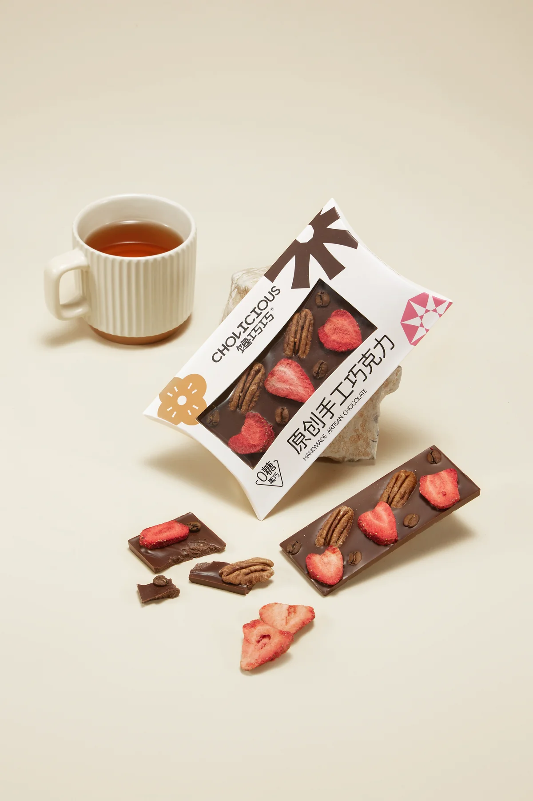

项目 01
本人品牌实战 · 阶段成果已验证
专业做得出来，消费者却不一定会选
馋巧巧 CHOCOLICIOUS
我做：产品定义、品牌方向与经营判断
可看：产品系统、口碑链路、线上履约服务
 金鱼
产品和内容顾问
金鱼
产品和内容顾问
独立产品和内容顾问 · 服务消费品牌创始人
我和正在推进新品的消费品牌创始人一起，把想法带到落地。从产品定义和卖点，到页面、拍摄、项目节点、跨团队推进和验收，把关键判断变成团队可以共同推进的路径。

01 · 本人品牌实战 · 阶段成果已验证 馋巧巧 CHOCOLICIOUS 从研发做成品牌；完整经营年度内“融化”投诉记录 0（用户确认）。 02 · 已完成客户项目
CCCLAY 无限倾角杯
页面样板完成后，继续受邀参与 3 个重点新品。
03 · 独立方案 · 未实施
加盟连锁产品经营
把混在一起的项目，拆成一套 90 天试跑系统。
02 · 已完成客户项目
CCCLAY 无限倾角杯
页面样板完成后，继续受邀参与 3 个重点新品。
03 · 独立方案 · 未实施
加盟连锁产品经营
把混在一起的项目，拆成一套 90 天试跑系统。
另有 3 份项目记录，包括受邀参与的有趣人类咖啡诊断。
适合找我的时刻
项目索引
专业做得出来，消费者却不一定会选
我做：产品定义、品牌方向与经营判断
可看：产品系统、口碑链路、线上履约服务
商品页说不清
可看：10 张主图、9 屏详情页
长期产品、日常上新和临时项目挤在一起 新品和长期产品挤在一起
可看：产品排期、90 天试跑方案、公开 PDF
项目 01 · 本人品牌实战 · 阶段成果已验证
馋巧巧让我亲自站到消费品牌老板的位置上。产品定义、品牌方向、包装、电商、线下场景和经营优先级，每一个判断都要面对消费者，也要面对有限的时间和资源。
我负责：核心产品定义、品牌方向和经营优先级；协同设计、供应链、电商与线下执行。
项目 02 · 已完成客户项目
CCCLAY 的无限倾角杯有明确的产品差异，线上却缺少一条清楚的购买路径。我先把卖点讲清，再把页面顺序、拍摄需求和设计 brief 接起来。
我负责：卖点梳理、页面结构、文案、摄影与设计 brief、集中反馈和终稿把关。
你最终可以买到什么
如果你还说不清需要哪种服务，没有关系。具体范围按当前问题确认，不先套一份大而全的方案。
拆开产品、卖点、素材、页面和执行链，找出真正影响项目的卡点，排清修改顺序。
你会拿到：问题判断和下一步优先级。
梳理购买理由、页面顺序、拍摄需求、设计信息和待确认事实，让摄影师和设计师能够接手。
你会拿到：页面结构、文案与素材 brief。
把目标拆到负责人、节点、证据和验收，集中处理跨团队卡点，避免事情散在聊天记录里。
你会拿到：推进清单和节点验收方式。
第一次怎么开始
一个商品链接或产品资料、项目目前进行到哪里、你最想解决的一个问题。
我先判断问题更像出在产品、卖点、素材、页面，还是执行链，以及我是不是合适的人。
需要具体判断和方案时，再确认最小范围、双方责任、交付物、费用和验收方式。
第一次沟通只确认问题和合作匹配度，不在聊天里展开一套完整免费方案。
为什么可以找我
先看产品事实、消费者选择、成本和交付限制，再决定哪个问题最该先解决。
产品怎么定义、摄影拍什么、页面怎么排、哪些事实待确认，开始执行前先说清楚。
把负责人、节点、证据和验收接起来，让设计、摄影、供应链和运营知道下一步做什么。
项目 03 · 独立方案 · 未实施
一家走东方香茶路线、接近 3000 家门店的加盟品牌，要同时处理长期产品、临时上新和门店反馈。下面这四种情况，往往会一起出现。
每个月都在上新，招牌产品却没有变得更清楚。
临时项目一来，长期产品和技术储备就往后排。
新品卖得不好，说不清是产品问题，还是缺货、培训和门店执行。
各部门都有计划，却没人负责删项目、改顺序和定最终节点。
项目记录
卡住的问题
门店有人来，也有内容互动，但租期和回本压力都在。这里不能先喊增长，得先看清菜单、陈列、夜间消费和记录方式有没有用。
卡住的问题
好看的想法很多，但食品项目最后要过工艺、模具、包装、成本和客户理解。创意只是第一步，能做出来才算数。
卡住的问题
我擅长把 AI 放进下属正在做的真实任务里：一起拆任务、示范、验收，再让他们独立完成。效率提高以后，他们有余力接自己的单，也能接住我分出去的业务。
关于我
我做过巧克力和食品产品，也自己做过消费品牌。这让我习惯同时看产品事实、消费者理解和执行限制。
我也长期把 AI 放进项目管理、客户材料、产品判断、供应链分析、设计 brief 和团队培训里。它是工作方法，不是单独卖点。
微信联系
加微信后，发我商品链接或产品资料，再说一句目前最卡的地方。我先判断这是不是我能解决的问题。
添加时可以备注：产品 / 页面 / 新品项目。需要具体方案时，再进入付费诊断或项目合作。